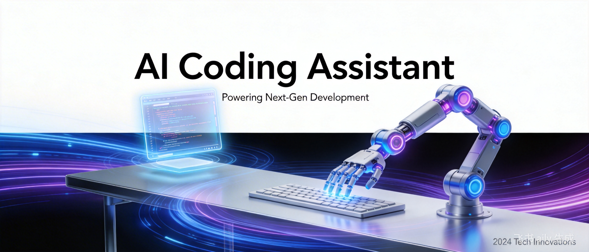
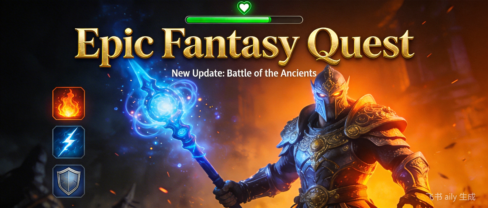
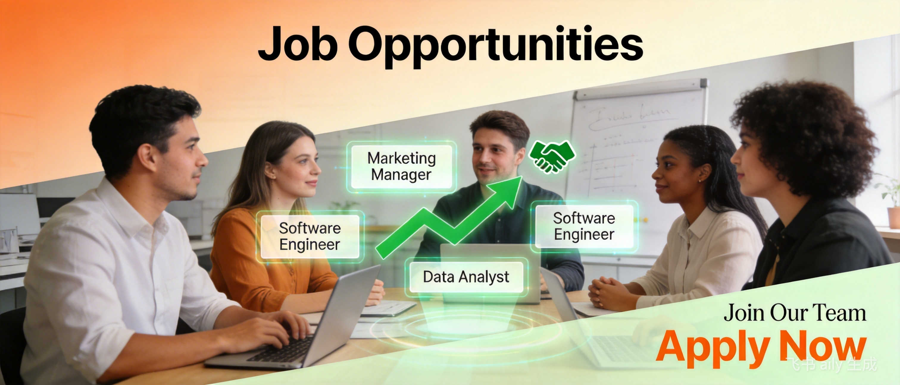

青年周刊 · 创刊号
📋 本期目录
刊首语
欢迎来到《青年周刊》！这是一份专门为年轻人打造的内容聚合周刊。在这个信息爆炸的时代，我们希望成为你身边的一个可靠伙伴，帮你筛选有价值的内容，发现有趣的事物，记录成长的点滴。
《青年周刊》融合了传统杂志的编辑精神与现代互联网的开源理念。我们参考了阮一峰老师的《科技爱好者周刊》的开源模式，同时借鉴了《青年文摘》的温暖风格、《看天下》的视野广度、《知音漫客》的视觉冲击力，以及《大众游戏报》的游戏精神。
我们的内容板块包括：- 科技新势力：AI、编程、工具推荐，让你走在技术前沿
- 二次元次元壁：ACG资讯、动漫评论、原创插画，守护你的次元梦
- 游戏研究所：游戏评测、攻略心得、行业动态，玩出专业态度
- 青春故事会：成长故事、职场经验、学习心得，陪你走过迷茫期
- 好工具：生产力工具、生活助手推荐，提升效率的利器
- 在看什么：影视、书籍、播客推荐及评论，丰富你的精神世界
- 一周图鉴：视觉内容精选，用图片记录精彩瞬间
- 谁在招人：招聘信息、实习机会、职场动态
欢迎投稿！ 无论是文章、推荐还是想法，都欢迎通过 GitHub Issues 与我们分享。
让我们一起，打造属于年轻人的内容社区。
——《青年周刊》编辑部

科技新势力
本周精选：AI工具、编程技巧、效率软件推荐
🤖 AI工具推荐
1. Cursor：AI驱动的代码编辑器
Cursor 是一款基于 VS Code 的 AI 代码编辑器，内置了 GPT-4 级别的代码补全和理解能力。
亮点功能：- 智能代码补全：不只是补全单词，而是理解上下文生成整段代码
- AI 聊天：选中代码后可以直接问 AI 问题
- 代码重构：描述你想要的效果，AI 帮你重构
- 自动生成提交信息
使用建议： 配合良好的代码注释习惯，可以让 AI 更准确地理解你的意图。
2. Suno AI：用文本生成音乐
Suno AI 是一款革命性的 AI 音乐生成工具，只需要输入文字描述，就能生成完整的歌曲。
特色：- 支持多种音乐风格：流行、摇滚、古典、电子等
- 可以生成带歌词的歌曲
- 免费版每月有一定额度
💻 编程技巧
Python 异步编程最佳实践
随着 IO 密集型应用越来越多，掌握异步编程成为 Python 开发者的必备技能。
``python
import asyncio
async def fetch_data(): # 异步 HTTP 请求示例 async with aiohttp.ClientSession() as session: async with session.get('https://api.example.com') as response: return await response.json()
并发执行多个任务
async def main(): tasks = [fetch_data() for _ in range(10)] results = await asyncio.gather(*tasks) return results `
关键要点：
- 使用
async 和 await 关键字
选择合适的异步库： aiohttp、aiomysql、aioredis
注意并发控制，避免资源耗尽
🛠️ 效率软件
本周推荐：Raycast
Raycast 是 macOS 上的生产力工具，可以替代 Spotlight，提供更强大的功能。
核心功能：
- 快速启动应用和搜索文件
- 剪贴板历史管理
- 窗口管理
- 丰富的插件生态
- 自定义脚本支持
快捷键： Option + Space
二次元次元壁
ACG资讯、动漫评论、原创推荐
📺 春季新番推荐（2026年4月番）
1. 《葬送的芙莉莲》第二季
类型： 奇幻 / 冒险 / 治愈
简介： 魔法使芙莉莲在勇者一行人击败魔王后，开始了新的旅程。这部作品以独特的视角探讨了时间、生命和情感的主题。
看点：
- 精美的作画和细腻的情感刻画
- 不同于传统异世界作品的深度
- 优秀的配乐和世界观构建
推荐指数： ⭐⭐⭐⭐⭐
2. 《我推的孩子》第二季
类型： 偶像 / 悬疑 / 剧情
简介： 围绕偶像星野爱和她的两个孩子展开的悬疑故事，深入探讨了娱乐圈的光鲜与黑暗。
看点：
- 紧凑的剧情和出人意料的转折
- 对娱乐圈生态的真实描绘
- 悬疑元素的巧妙融入
推荐指数： ⭐⭐⭐⭐⭐
📚 漫画推荐
《电锯人》第二部
藤本树老师的《电锯人》第二部《学园篇》正在连载中，延续了第一部的疯狂与创意。
推荐理由：
- 独特的叙事风格
- 令人意想不到的剧情发展
- 对人性深刻的探讨
阅读平台： 少年 Jump+
🎨 本周插画师推荐
插画师： Rolua
风格： 日系赛博朋克，色彩绚丽，充满未来感
代表作： 各种原创角色设计和场景插画

游戏研究所
新游评测、游戏攻略、行业动态
🎮 本周焦点：《黑神话：悟空》最终预告
2026年最期待的国产 3A 大作《黑神话：悟空》发布了最终预告片，展示了更多游戏内容和玩法细节。
预告片亮点：
- 展示了多种变身系统
- 丰富的 Boss 战设计
- 精美的画面表现力
- 中国传统文化的深度融入
发售日期： 2026年8月20日
期待指数： ⭐⭐⭐⭐⭐
📱 手游推荐
《绝区零》
米哈游最新动作 RPG 手游，已经正式上线。
游戏特色：
- 爽快的战斗系统
- 独特的都市奇幻世界观
- 精美的 3D 画面
- 丰富的角色阵容
适合人群： 喜欢动作游戏和二次元风格的玩家
🎯 独立游戏推荐
《Hades II》（哈迪斯2）
Supergiant Games 的roguelike动作游戏续作，目前处于抢先体验阶段。
改进点：
- 更多可玩角色
- 更丰富的武器系统
- 改进的叙事结构
- 魔法系统的加入
平台： PC / Switch
💡 游戏开发小知识
Unity vs Unreal Engine 5：如何选择？
特性 Unity Unreal Engine 5 学习曲线 较平缓 较陡峭 画面表现 优秀 顶级 移动端 优秀支持 一般 2D游戏 优秀 一般 授权费用 免费/订阅 5%版税 资源商店 丰富 较少
建议：
- 2D 游戏、手游、独立开发 → Unity
- 3A 大作、追求极致画面 → Unreal Engine 5
青春故事会
成长故事、职场指南、学习心得
💼 职场新人指南：入职前三个月的生存法则
作为职场新人，前三个月是建立印象、适应环境的关键时期。以下是一些实用建议：
1. 主动学习，不懂就问
- 记录问题：准备一个笔记本，随时记录不懂的问题
- 先思考再问：提问前先自己搜索或思考，带着自己的理解去问
- 总结反馈：问完问题后及时总结，避免重复提问
2. 建立工作日志习惯
`
工作日志模板：
日期：2026-04-08
今日完成：
- xxx
- xxx
遇到的问题：
- xxx
明日计划：
- xxx
学习收获：
- xxx
``
3. 与导师/Leader 保持良好沟通
- 定期（每周或每两周）主动约 1-on-1 会议
- 准备会议议程，不浪费彼此时间
- 反馈工作中遇到的困难和需要的支持
4. 快速熟悉业务和技术栈
- 阅读文档：产品文档、技术文档、历史代码
- 了解流程：开发流程、发布流程、协作规范
- 画图整理：用思维导图整理业务架构和技术架构
5. 建立个人品牌
- 可靠性：承诺的事情要做到，做不到要及时沟通
- 主动性：主动承担任务，主动发现问题
- 学习能力：快速学习新知识的能力
📖 读者投稿：从实习生到正式员工的一年
作者：@小明的成长日记去年这个时候，我还是一名大四实习生，对未来充满迷茫。一年后，我已经成长为能够独立负责项目的正式员工。这一年我学到了很多，也踩了不少坑。>
最大的感悟是：职场和学校最大的区别在于结果导向。在学校，努力的过程也会被认可；但在职场，最终交付的结果才是衡量标准。>
其次，沟通能力比技术能力更重要。很多技术问题本质上是沟通问题。学会用非技术人员也能理解的方式解释技术方案，是工程师的必修课。>
最后，保持学习热情。技术更新很快，只有持续学习才能不被淘汰。我给自己定了一个小目标：每周至少学习一项新技术或新工具。
好工具
生产力工具、生活助手推荐
🖥️ 开发工具
1. Warp：现代化的终端
Warp 是一款基于 Rust 开发的现代化终端，提供了许多创新的交互方式。
特色功能：- 命令行编辑如同 IDE：支持语法高亮、自动补全
- AI 命令提示：描述需求自动生成命令
- 块级输出：每条命令的输出都是独立的块，便于复制和分享
- 团队协作：支持保存和分享命令工作流
2. TablePlus：现代化的数据库管理工具
TablePlus 是一款支持多种数据库的现代化管理工具。
支持数据库：- MySQL、PostgreSQL、SQLite
- MongoDB、Redis
- SQL Server、Oracle
- 界面简洁美观
- 原生应用，性能优秀
- 支持 SSH 隧道连接
- 强大的查询编辑器
📝 效率工具
3. Notion Calendar
Notion 推出的日历应用，可以与 Notion 工作区深度集成。
优势：- 与 Notion 数据库同步
- 支持多个日历账户（Google、Apple、Outlook）
- 美观的界面设计
- 免费使用
4. Readwise Reader
Readwise Reader 是一款稍后读应用，支持多种内容格式。
功能亮点：- 保存网页文章、PDF、Twitter 线程
- 高亮和笔记同步
- 每日回顾功能
- 支持 RSS 订阅
🎨 设计工具
5. Figma 新功能：AI 设计助手
Figma 最近推出了 AI 设计助手功能，可以根据文本描述生成设计稿。
应用场景：- 快速原型设计
- 灵感参考
- 自动调整设计布局
在看什么
影视、书籍、播客推荐
🎬 影视推荐
电影：《沙丘2》（Dune: Part Two）
导演： 丹尼斯·维伦纽瓦
简介： 保罗·厄崔迪与契妮和弗雷曼人联手，踏上对毁灭他家族的阴谋者的复仇之路。
看点：- 震撼的视觉奇观
- 史诗级的配乐
- 对原著的忠实还原
剧集：《三体》Netflix 版
Netflix 版《三体》第一季已经上线，引发了热议。
评价：- 制作精良，特效出色
- 对原著有一定改编，但核心精神保留
- 节奏紧凑，适合 binge-watching
📚 书籍推荐
《原子习惯》（Atomic Habits）
作者： James Clear
核心观点： 小习惯的复利效应。每天进步 1%，一年后你会进步 37 倍。
四个习惯养成法则：- 让它显而易见
- 让它有吸引力
- 让它简便易行
- 让它令人愉悦
《纳瓦尔宝典》（The Almanack of Naval Ravikant）
作者： Eric Jorgenson
简介： 硅谷投资人 Naval Ravikant 的智慧合集，涵盖财富、幸福、哲学等话题。
金句摘录："Play iterated games. All returns in life, whether in wealth, relationships, or knowledge, come from compound interest."
🎧 播客推荐
《忽左忽右》
一档文化类播客，由 JustPod 出品。主持人程衍樑与各路嘉宾探讨历史、文化、社会等话题。
推荐单集：- 2026年3月：《AI时代的创作与版权》
- 2026年2月：《东亚社畜文化考》
《声东击西》
由徐涛主持的播客，探讨科技、商业、社会等话题。
特色： 视角独特，常常从意想不到的角度切入话题。
一周图鉴
本周精选视觉内容
📷 本周摄影作品
主题： 城市夜景
{kind=link}
摄影师：@nightwalker
地点：上海外滩
设备：Sony A7R5
🎨 本周设计作品
主题： 赛博朋克风格插画
{kind=link}
设计师：@pixeldreamer
工具：Procreate + Photoshop
📊 本周数据可视化
主题： 2026年AI应用发展图谱
{kind=link}
注：以上图片为占位符，实际周刊将使用真实图片

谁在招人
本周招聘信息精选
💻 技术岗位
1. 字节跳动 - 前端开发工程师
地点： 北京 / 上海 / 杭州
要求：- 本科及以上学历，计算机相关专业
- 熟悉 React / Vue 等前端框架
- 良好的编码习惯和工程化思维
- 有竞争力的薪酬
- 免费三餐、房补
- 丰富的技术分享和培训
2. 阿里巴巴 - AI产品经理
地点： 杭州
职责：- 负责 AI 产品的规划和设计
- 与技术团队紧密合作，推动产品落地
- 分析用户数据，持续优化产品体验
- 3年以上产品经理经验
- 对 AI 技术有深入了解
- 优秀的沟通和协调能力
3. 米哈游 - 游戏策划
地点： 上海
方向： 系统策划 / 数值策划 / 文案策划
要求：- 热爱游戏，有深度游戏体验
- 良好的逻辑思维能力和文字表达能力
- 有相关实习或项目经验优先
🎨 设计岗位
4. Figma - Product Designer
地点： 旧金山 / 远程
要求：- 3年以上产品设计经验
- 优秀的视觉设计和交互设计能力
- 良好的英语沟通能力
- 远程友好
- 有竞争力的薪酬和期权
- 每年设计大会参访机会
📚 实习岗位
5. 小红书 - 产品实习生
地点： 上海
要求：- 2027届及以后毕业
- 每周至少实习 4 天
- 对互联网产品有热情
- 深入了解内容社区产品的机会
- mentor 1对1指导
- 实习证明和转正机会
📮 关于本期周刊
《青年周刊》第1期- 编辑：青年周刊编辑部
- 发布日期：2026年4月8日
- 投稿邮箱：youth-weekly@xfengyin.com
- GitHub：https://github.com/xfengyin/youth-weekly
- RSS 订阅：https://xfengyin.github.io/youth-weekly/rss.xml
- 邮件订阅：https://xfengyin.github.io/youth-weekly/subscribe
"保持好奇，保持年轻。"
下期预告： 2026年4月15日，敬请期待！